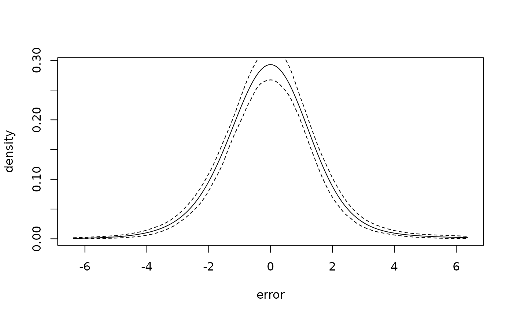

The estimated density of the errors of a dpm() fit, which is the object the
method exists to produce: BART commits to one normal, and this says what
shape the errors actually have. It is the posterior of the density of a new
error, evaluated on a grid.
Arguments
- object
a fitted model from
bartisan()withfamily = dpm().- at
the grid to evaluate on. Defaults to 201 points spanning four posterior-mean error standard deviations either side of zero.
- level
width of the pointwise interval.
- iterations
optional integer vector selecting which stored draws to use. Defaults to all of them.
Value
A data frame with one row per grid point and columns at, mean, lower and
upper – the posterior mean density and a pointwise interval, ready to plot
against the normal density a Gaussian fit would have assumed.
Examples
set.seed(1)
n <- 300
d <- data.frame(x = runif(n, -1, 1))
d$y <- 10 * d$x^3 + rt(n, 3)
fit <- bartisan(y ~ x, data = d, family = dpm(),
control = bartisan_control(num_trees = 20, num_burn = 100,
num_draws = 100, verbose = FALSE))
density <- error_density(fit)
plot(density$at, density$mean, type = "l", xlab = "error", ylab = "density")
lines(density$at, density$lower, lty = 2)
lines(density$at, density$upper, lty = 2)
